Birding analytics and tools for your eBird workflow
SnowRaven takes your eBird and Macaulay Library records and lets you explore
them in new ways. Weather and tides for your checklists, deep per-species
history, life-list analytics, media coverage, breeding records, and an
interactive map. It uses your own exported data, on your own device, so you
stay in control.
macOS · Windows · Raspberry Pi · No account, no telemetry
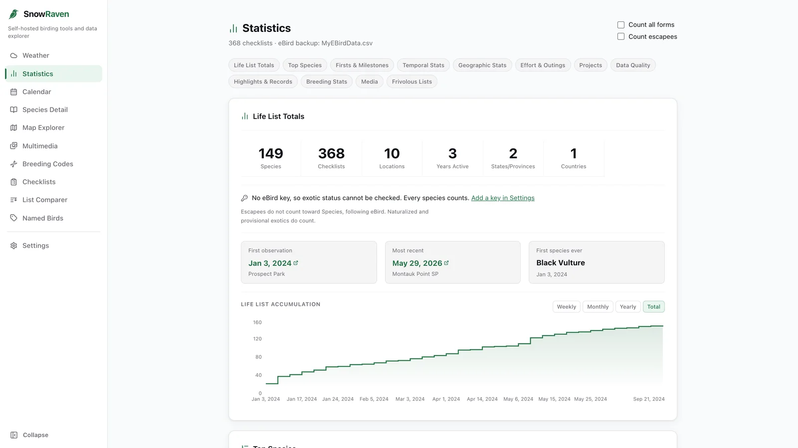
Life list149 species
Tide3.1 ft rising
Privacy by design
Your data stays on your device
SnowRaven has no account, no analytics, no telemetry, and no server we operate.
Your eBird backup, Macaulay Library export, settings, and API keys never leave
your computer. When you ask for data, it talks directly to the services it
draws from: eBird and OpenWeather with your own keys, plus keyless sources
(OpenStreetMap, map tiles, NOAA tides, and the Cornell Lab sites that bird-link
icons and, while enabled, embedded Macaulay media load from). There is no SnowRaven server in the middle.
An off-by-default Disable embedded media setting prevents those
players and requests; direct media links still work when you choose to open them.
No accountsNothing to sign up for. Just open it and go.
No trackingZero analytics or telemetry, on every platform.
Keys & data stay localYour files and API keys live on your machine.
No developer serverWe run nothing. There is no SnowRaven cloud.
What's inside
Ten tools, one quiet workspace. And they work offline
Everything reads from the eBird and Macaulay Library exports you already have. No data entry, no busywork. Once your data has loaded, the tools keep working without a connection.
Weather & Tide Lookup
Paste an eBird checklist ID and get a clean, ready-to-paste weather summary:
temperature, wind with its Beaufort description, humidity, dew point,
sunrise and sunset, and the moon phase on night checklists. The same lookup
fills in the historical tide from the nearest NOAA station, observed or
predicted, with the surrounding highs and lows. Copy weather and tide
together in one click. You can also skip the checklist entirely: Current
shows the live weather and tide for where you are, and Predict forecasts
both for a place and time you choose (about a week ahead for weather, and
much further for the tide). A weather backlog at the bottom of the tab lists
your recent checklists that still have no weather block (built from your own
backup, newest first) so you can work down the ones you missed instead of
looking them up one at a time, with a Copy weather & go action that copies a
checklist's weather and opens its eBird comment page to paste.
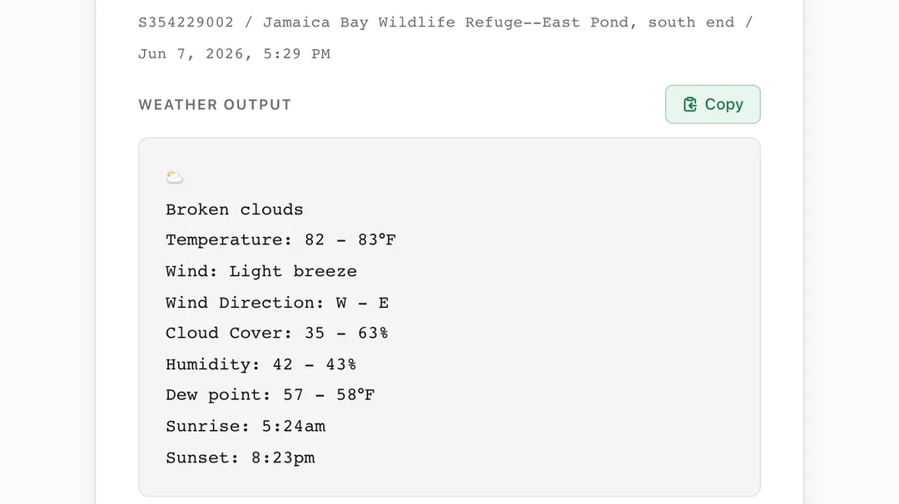
Species Detail
Your complete history with any species. Sighting stats, breeding codes, the
species you most often see it with, field notes, top locations (public eBird
hotspots link to their hotspot page, wherever a location name appears in the app),
sightings-over-time graphs, and a map of every observation, all in one view.
A Counties switch on that map shades every US county where you
have recorded the bird, tinted by how many of your checklists there reported it,
so the counties you have birded without finding it stay a plain outline. It is
computed from your own file, so it needs no connection and no API key, and it
reshades the moment you pick a different species, leaving your Pins or Heatmap choice as you set it.
A Recent Media section plays your most recent photo, audio
recording, and video of that species inline from the Macaulay Library, each with
its capture date, a link to the recording itself, and the checklist it came from.
If an embed is slow, blocked, or you are offline, it shows those same links in
place of a blank frame, and recovers on its own once you are back.
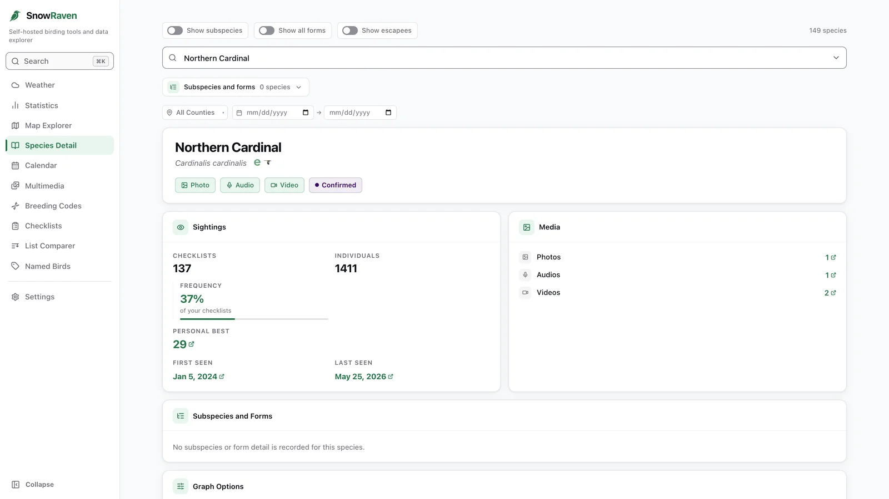
Statistics
A full analytics dashboard built from your own data: life-list totals and
growth, top species, firsts and milestones, temporal and geographic patterns,
effort and methodology, data quality, breeding stats, and deep media
statistics (documentation coverage, age/sex and behavior breakdowns),
where the photo, audio, and behavior counts link straight to the matching
media in your Macaulay Library.
A Frivolous Lists section at the bottom adds a few playful, self-completing
collections, just for fun.
Two count rules sit in the tab header, both off by default.
One, Count all forms, follows eBird's own rule for what counts as a species:
a form that leaves the species in doubt does not count (a spuh, a slash, a
hybrid, an undescribed form), while a form that only leaves the subspecies
in doubt counts as its parent species. It moves the Species tile and most
of the cards, though media documentation coverage and the Frivolous Lists
always use countable species, whichever way it is set, and say so where
their figures appear. The other, Count escapees,
follows eBird's own life-list rule: Naturalized and Provisional exotics
count toward a life list, Escapee does not. SnowRaven works out which of
your birds eBird tags as escapees by asking about the smallest set of your
checklists that covers every species you have recorded, then names every
bird it leaves out and why. Those birds stay on your Life List; only the
count changes. Both are per-session, resetting on relaunch.
The Geographic Stats map carries the same Counties overlay,
shaded by species or by checklists, with numbers that match the county tables
beside it, and the Map Explorer's too while Count all forms is off (the Map
Explorer always applies the countable-species rule). A Projects
section reports which eBird projects your
checklists were submitted to, the California Breeding Bird Atlas among them.
Your backup does not record that at all, so each checklist has to be asked about
on its own. Nothing is sent until you press Check projects, and the section tells
you the exact cost first: how many requests, and roughly how long. It can be
stopped and resumed, answers are stored on your device so an interrupted run
picks up where it left off, and every tally is shown with the number of
checklists it was drawn from, so a partial answer reads as a floor rather than
as a finished total.
Light or dark, your choice. Dark mode shown.
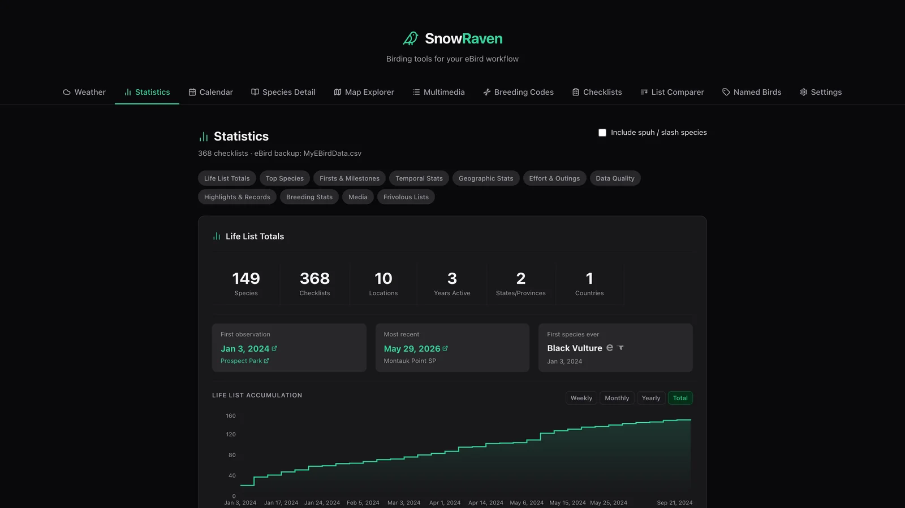
Calendar
A year of your birding as twelve month grids, like a wall calendar's twelve
pages, each day carrying a number: the species you saw, the checklists you
submitted, or the total count of individual birds you recorded, your choice.
Each day is shaded by how busy it was, so the shape of your year reads at a
glance: busy migration weeks, quiet mid-summer, a big count-day spike.
Type-to-find a single species to see the seasonal shape of when you record it,
page across every year your data covers or fold them all into one combined grid,
switch between the big month grids and a whole-year overview of shaded, dated
thumbnails, turn on a colorblind-friendly texture mode, and click any day for
its checklists, each with its start time, location, and species count.
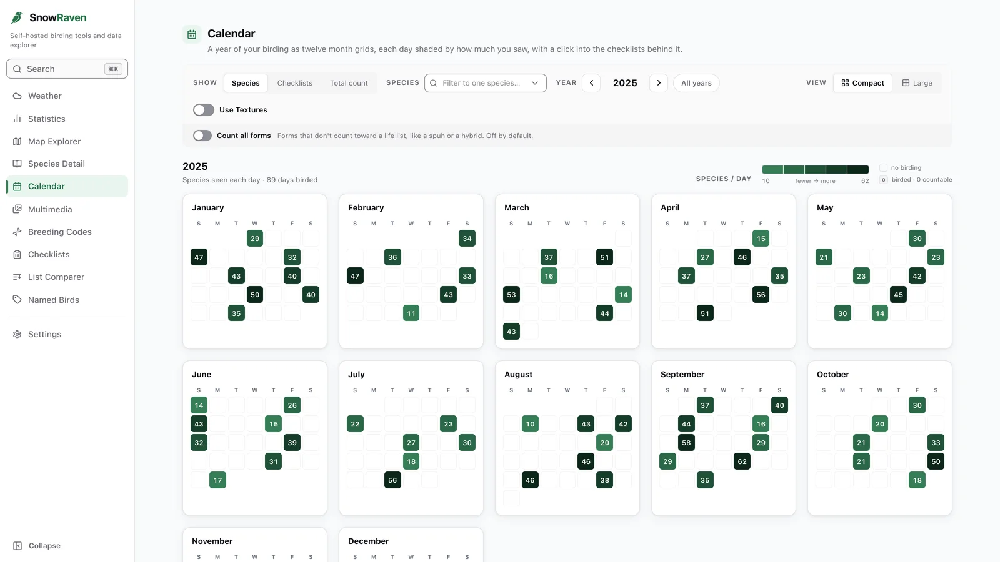
Map Explorer
An interactive map of your sightings with an optional heatmap, nearby eBird
hotspots colored by whether you've visited them, media targets, and a California
Breeding Bird Atlas overlay. The hotspot pins can also be colored, opt-in, by
what you want to know: My species and My checklists color each hotspot by your
own countable species or checklist count there, entirely offline from your
loaded backup, and Recent activity colors them by how many species the whole
eBird community reported at each hotspot in the last week or 30 days, fetched
with your own key a few hotspots at a time and cached on your device for six
hours, so the busiest hotspots near you stand out at a glance. The values ride
a five-class blue ramp with a legend showing each class's true range, a hollow
pin honestly means "asked, and the answer is zero", a dashed gray pin means
"not checked yet", and the popup and keyboard list state every number in
words, so the reading never depends on color alone. An opt-in Use Tier Rings
switch, remembered between sessions, adds a segmented ring to each ramp pin
(a pin's tier fills that many of five segments), mirrored in the legend and
popup, so tiers are readable with no color perception at all. Optional county lines draw US county boundaries over
the current view, kept crisp and accurate at every zoom because they come straight
from the map's own tiles, and can shade each county by how many species (or checklists) you've
recorded there, drawn from your own loaded backup, with a legend, a popup per county,
and a keyboard-accessible list of the counties in view. A third Completeness metric
shades each county by how complete your county list is (your countable species there
measured against everything ever reported to eBird for that county, on a fixed 0–100%
scale), with a per-county progress bar, your newest county species, and a short list of
targets you haven't recorded there yet. That one metric needs a connection and your own
eBird API key (the app says so right at the control); lookups stay bounded to the
counties you've birded in view and are cached on your device for 30 days, so fetched
counties keep shading offline. An optional colorblind-friendly
Use Textures mode paints each county as a crosshatch whose density rises with your count,
so you can rank counties without relying on color. Only one of the atlas or county
shadings is active at a time, and while a shading ramp is on the basemap's land mutes to
grey so the ramp stands out. A Point Size control lets you shrink or hide the sighting
points so a shaded map reads through underneath. A Nearby Lifers section maps where species you
haven't recorded yet were reported recently near a point you choose, each spot
a labeled pin colored by how recently it was seen, with dates and checklist
links a click away. Nearby Lifers and Media Targets each carry a locator dot at
their exact coordinate and a Labels / Dots toggle, so you can collapse the marker
chips to clean dots for an overview of where the birds are. Set a time range and radius, search a place name, use
your location, or right-click the map (long-press on touch) to drop a pin and
search from there. Move or zoom the map away from the last search and a Search this area
button appears on the map, wherever there is room for it above the map's own
corner buttons, re-running that view's search over the area you are looking at in
one press. It works out both the center and the radius from the view, sizing the
circle so everything on screen falls inside it, rounding up to one of the
sidebar's own four radius sizes and stopping at 25 miles. The center is written
into the sidebar's coordinate boxes and your Radius setting is left alone, so the
size searched and the size shown there can differ. The area the search actually covered is drawn on the map, with the
ground outside it gently dimmed, so you can see at a glance whether the pins in
front of you are the answer to what you are looking at. Once pressed, a second press cannot
stack a second lookup: a keyboard press leaves the button in place, greyed out
and inert and announced as already searched, while a click or tap may instead
let it leave the corner. Either way it goes live again as soon as you move the
map somewhere new. Panning on
its own never searches: nothing is sent until you press. The map's own controls carry the same three round buttons on
every view that shows a map, so sharing a spot, centering on where you are, and
going fullscreen never cost a trip through the filters panel, and if location is
off or denied the reason and the fix appear on the map itself. Switch between street, satellite, and topo basemaps, with a
hiking-trails layer.
The same gesture also shares a spot. Right-click, or long-press
on touch, on your sightings map, a species' locations map, the statistics map, or
a named bird's map, and a share pin plants at the exact point you pressed, showing
its coordinates. Drag it to fine-tune, then copy a block you can
paste into a text message: the coordinates in decimal degrees, plus a Google Maps
and an Apple Maps link that open that spot for whoever you send it to. The
coordinate line on its own pastes straight into any maps app's search box, and
Settings has an independent switch for each of the three lines, so you can send
any combination you like. Every map carries a round button in the same corner for
this: a flag that drops the pin at the center of the view on the maps where you
place your own pin, and a map pin on the Hotspots, Nearby Lifers, and Media
Targets views, where it opens the same popup your search center already offers. Either way the whole flow works from the
keyboard without a pointer gesture. It is all assembled locally as
plain text: no shortener, no lookup, nothing fetched, so it works with no
connection and no coordinate leaves your device.
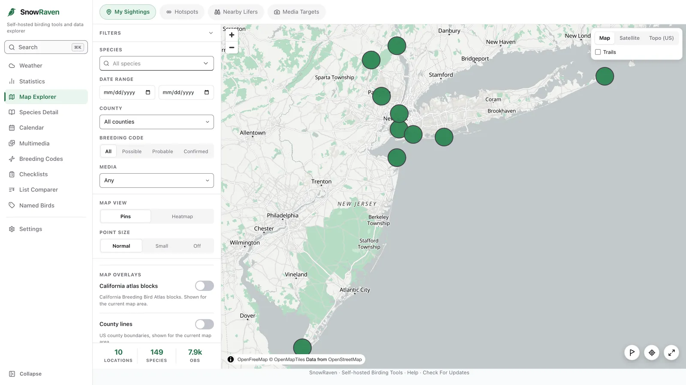
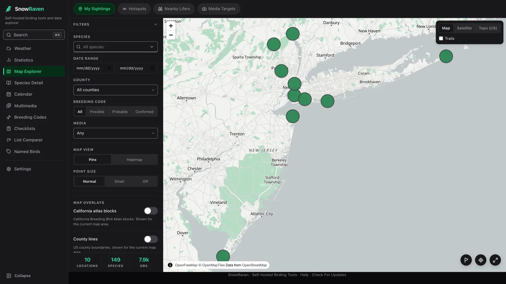
Multimedia
Your life list as a media checklist: photo, audio, and video coverage for every
species, so you can see at a glance what you still need to capture. Filter by sex
and age (pull up just your juveniles, or the males of a dimorphic species) with
counts and links straight to the matching media in your Macaulay Library.
An Unbounded toggle lets the full table scroll with the page instead of
inside a fixed-width box, and a Pin column labels toggle keeps
the row of column headings in view as you scroll down the list, so you always
know which count a number is. It is off by default and per-session, resetting on relaunch,
and it is the same control, and the same behavior, as Pin code labels on the
Breeding Codes tab.
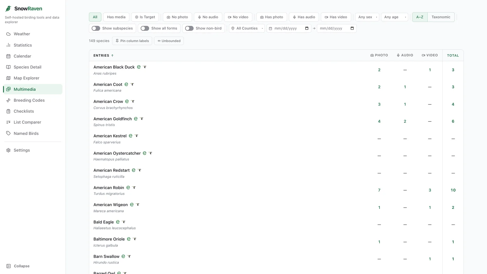
Breeding Codes
Every species you've recorded a breeding code for, laid out as a color-coded
matrix across all eBird codes. Sort and filter by tier to see exactly where your
breeding evidence stands. An Unbounded toggle drops the table's
horizontal scroll constraint so a full row is visible at once rather than scrolling
within a fixed width, and Pin code labels keeps the row of code
headings in view as you scroll down a long species list, so you always know which
column a circle sits in. It is off by default and per-session, resetting on relaunch.
What counts as a species follows eBird's own rule: a form that leaves the
species in doubt does not count (a spuh, a slash, a hybrid, an undescribed
form), while a form that only leaves the subspecies in doubt counts as its
parent species. On a phone, in either view,
the columns tighten to dot-width so more fit at once, and the species-name column
stays fixed on the left as you scroll the codes sideways in the normal view. Long
filter meanings wrap inside their pills, and a long bird name can wrap above its
eBird and Birds of the World links. Every label remains complete, both links remain
available with their full touch targets, and nothing escapes the name column. The
tier legend below the table spells out what each code means, wrapping onto a second
line rather than shortening a label when the screen is narrow. You can pinch to zoom
in on any part of the grid.
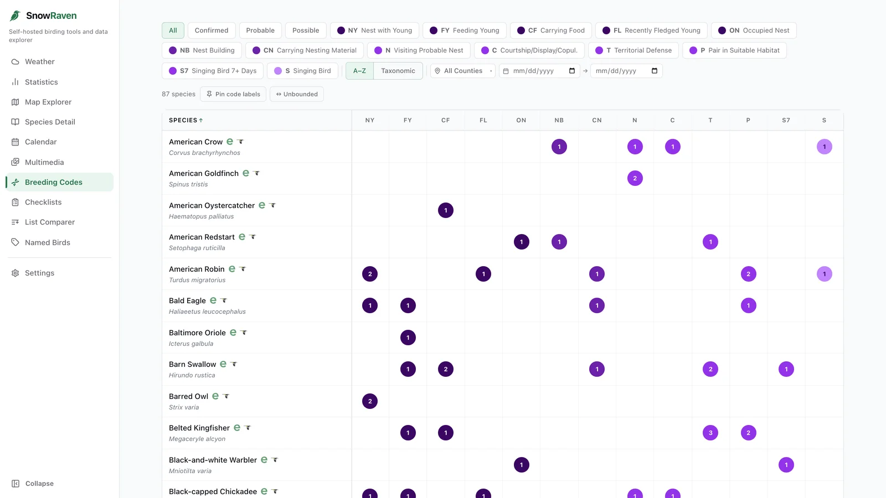
Named Birds
Give an individual bird a name in your eBird species comment with a
[name:…] tag (like [name:Winky]), and SnowRaven
gathers every sighting of that individual: its species, when you first and
last saw it, how long you've followed it, how many times, and each checklist
it appears on, with its location and a map of everywhere that bird has been
seen. It also ranks that bird's own top locations, counted only from the
checklists carrying its tag, so a place the species floods but your bird
visited once stays where it belongs. If you've saved your Macaulay Library
export too, each individual also
gathers its own photos, audio, and video as inline players from the Macaulay
Library, each labeled with its date and checklist. An asset's own caption or
media note wins if it carries a name tag; otherwise the species comment you
tagged is used, so the media from a tagged observation is attributed without
captioning every file. Named birds also surface per-species on Species Detail.
Prefer no inline players? Turn on Disable embedded media in
Settings. It is off by default; when enabled, player areas say “Embedded media
is disabled in Settings.” while dates, checklists, and direct Macaulay Library
links stay available.
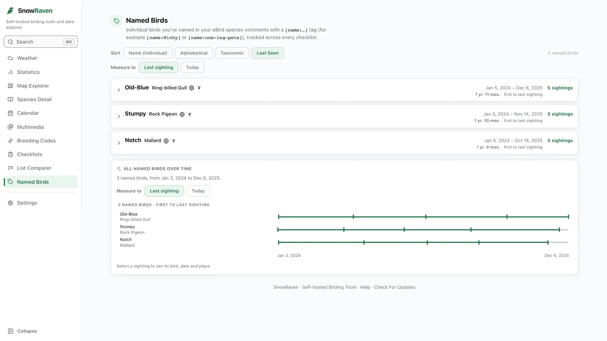
Checklists
Your checklists as whole outings. Search every checklist comment and every
species comment you've ever written, and browse a filterable list of all
your checklists: combine has and doesn't-have filters for comments, media,
breeding codes, completeness, protocol, county, and dates. Pasted weather
and tide blocks stay hidden (and out of search) until you ask for them.
heron
May 24Green Heron hunting from the low snag at the west pond again.
Apr 2Night-heron roost back up to 11 birds at dusk.
Mar 9First Great Blue Heron nest material flight of the spring.
3 of 87 comments
List Comparer
Compare two life lists to see shared and unique species, or compare two
individual checklists side by side: counts with the higher total emphasized,
breeding codes, photo, audio, and video indicators, effort details,
checklist and species comments, and side-by-side weather and tide for
each checklist.
My listOther list
Northern Cardinal128
Song Sparrow59
Osprey31
Scarlet Tanager2–
Bobolink–4
Offline support
Out in the field with no signal, SnowRaven keeps working from the data
already loaded on your device. The maps and every analytical tab open
offline once they've loaded online once: your sightings, heatmap, atlas,
labels, and taxonomically sorted names with their icons all draw, even on a
first cold start of the day. A checklist's weather and tide you looked up
earlier re-show, marked as the last loaded result.
SnowRaven is honest about the edges. Live lookups (current weather and tide,
place search, the Checklist Comparer, nearby-bird overlays, and app updates)
still need a connection; offline you see the last loaded result where one
exists, or a plain note that you're offline. Only the vector street basemap
works offline; satellite, topo, and trails need a connection.
No connection
OpenMap Exploreryour sightings
OpenSpecies Detailyour data
OpenStatisticsyour data
SavedWeather & tidelast loaded
Working from data already on your device
Runs where you do
One app, everywhere you bird
Install the native desktop app on a Mac or Windows PC, or self-host it on a
Raspberry Pi (or any computer on your network) and open it from any browser. One
universal Mac build runs on both Apple Silicon and Intel, and the whole interface
is responsive, so it works on a phone or tablet too.
macOS: universal .dmg
Windows: .exe installer
Raspberry Pi / Linux: self-host
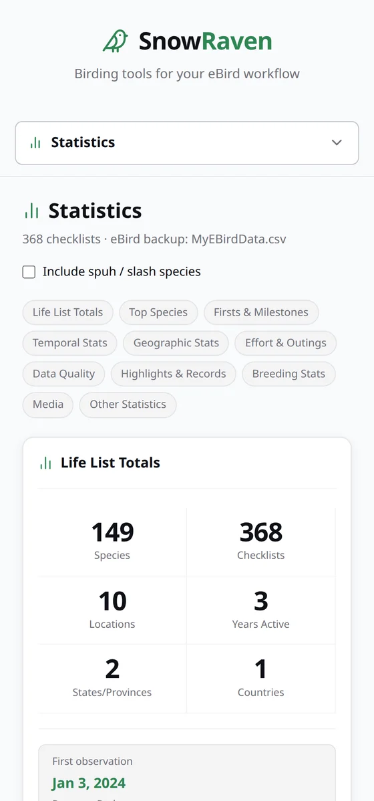
Get started
Up and running in a few minutes
Mac
Download the universal .dmg from the latest release, drag SnowRaven to Applications, then right-click the app and choose Open on first launch.
Download the .exe installer and run it. SmartScreen may warn about an unknown publisher, so choose More info, then Run anyway. In-app updates are cryptographically verified.
Run one command on your Pi (or any Debian or Ubuntu machine). It handles packages, the build, the Python environment, and an optional auto-start service.
SnowRaven began as a tool for one birder's own data, and it's shared here, open source and free, in case other birders find it useful. It works alongside eBird and the Macaulay Library, building on the exports they let you download so you can look at your own observations from new angles. There's nothing to sign up for, and nothing to buy.